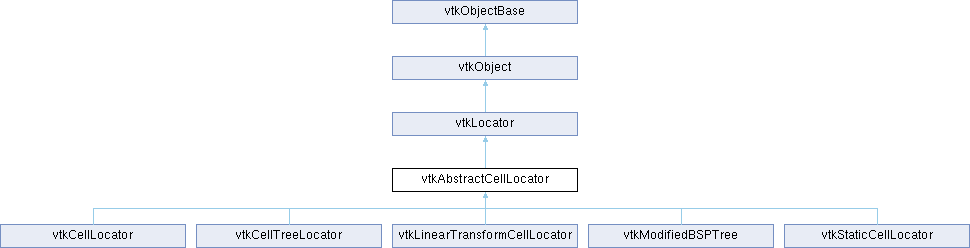

|
Etrek
|
|
Etrek
|
an abstract base class for locators which find cells More...
#include <vtkAbstractCellLocator.h>

Public Member Functions | |
| vtkTypeMacro (vtkAbstractCellLocator, vtkLocator) | |
| void | PrintSelf (ostream &os, vtkIndent indent) override |
| void | ComputeCellBounds () |
| virtual int | IntersectWithLine (const double p1[3], const double p2[3], double tol, double &t, double x[3], double pcoords[3], int &subId) |
| virtual int | IntersectWithLine (const double p1[3], const double p2[3], double tol, double &t, double x[3], double pcoords[3], int &subId, vtkIdType &cellId) |
| virtual int | IntersectWithLine (const double p1[3], const double p2[3], double tol, double &t, double x[3], double pcoords[3], int &subId, vtkIdType &cellId, vtkGenericCell *cell) |
| virtual int | IntersectWithLine (const double p1[3], const double p2[3], vtkPoints *points, vtkIdList *cellIds) |
| virtual int | IntersectWithLine (const double p1[3], const double p2[3], double tol, vtkPoints *points, vtkIdList *cellIds) |
| virtual int | IntersectWithLine (const double p1[3], const double p2[3], double tol, vtkPoints *points, vtkIdList *cellIds, vtkGenericCell *cell) |
| virtual void | FindClosestPoint (const double x[3], double closestPoint[3], vtkIdType &cellId, int &subId, double &dist2) |
| virtual void | FindClosestPoint (const double x[3], double closestPoint[3], vtkGenericCell *cell, vtkIdType &cellId, int &subId, double &dist2) |
| virtual vtkIdType | FindClosestPointWithinRadius (double x[3], double radius, double closestPoint[3], vtkIdType &cellId, int &subId, double &dist2) |
| virtual vtkIdType | FindClosestPointWithinRadius (double x[3], double radius, double closestPoint[3], vtkGenericCell *cell, vtkIdType &cellId, int &subId, double &dist2) |
| virtual vtkIdType | FindClosestPointWithinRadius (double x[3], double radius, double closestPoint[3], vtkGenericCell *cell, vtkIdType &cellId, int &subId, double &dist2, int &inside) |
| virtual void | FindCellsWithinBounds (double *bbox, vtkIdList *cells) |
| virtual void | FindCellsAlongLine (const double p1[3], const double p2[3], double tolerance, vtkIdList *cells) |
| virtual void | FindCellsAlongPlane (const double o[3], const double n[3], double tolerance, vtkIdList *cells) |
| virtual vtkIdType | FindCell (double x[3]) |
| virtual bool | InsideCellBounds (double x[3], vtkIdType cell_ID) |
| virtual void | ShallowCopy (vtkAbstractCellLocator *) |
| vtkSetClampMacro (NumberOfCellsPerNode, int, 1, VTK_INT_MAX) | |
| vtkGetMacro (NumberOfCellsPerNode, int) | |
| vtkSetMacro (CacheCellBounds, vtkTypeBool) | |
| vtkGetMacro (CacheCellBounds, vtkTypeBool) | |
| vtkBooleanMacro (CacheCellBounds, vtkTypeBool) | |
| vtkSetMacro (RetainCellLists, vtkTypeBool) | |
| vtkGetMacro (RetainCellLists, vtkTypeBool) | |
| vtkBooleanMacro (RetainCellLists, vtkTypeBool) | |
| virtual vtkIdType | FindCell (double x[3], double tol2, vtkGenericCell *GenCell, double pcoords[3], double *weights) |
| virtual vtkIdType | FindCell (double x[3], double tol2, vtkGenericCell *GenCell, int &subId, double pcoords[3], double *weights) |
| Public Member Functions inherited from vtkLocator | |
| virtual void | Update () |
| virtual void | Initialize () |
| virtual void | BuildLocator ()=0 |
| virtual void | ForceBuildLocator () |
| virtual void | FreeSearchStructure ()=0 |
| virtual void | GenerateRepresentation (int level, vtkPolyData *pd)=0 |
| vtkTypeMacro (vtkLocator, vtkObject) | |
| void | PrintSelf (ostream &os, vtkIndent indent) override |
| virtual void | SetDataSet (vtkDataSet *) |
| vtkGetObjectMacro (DataSet, vtkDataSet) | |
| vtkSetClampMacro (MaxLevel, int, 0, VTK_INT_MAX) | |
| vtkGetMacro (MaxLevel, int) | |
| vtkGetMacro (Level, int) | |
| vtkSetMacro (Automatic, vtkTypeBool) | |
| vtkGetMacro (Automatic, vtkTypeBool) | |
| vtkBooleanMacro (Automatic, vtkTypeBool) | |
| vtkSetClampMacro (Tolerance, double, 0.0, VTK_DOUBLE_MAX) | |
| vtkGetMacro (Tolerance, double) | |
| vtkSetMacro (UseExistingSearchStructure, vtkTypeBool) | |
| vtkGetMacro (UseExistingSearchStructure, vtkTypeBool) | |
| vtkBooleanMacro (UseExistingSearchStructure, vtkTypeBool) | |
| vtkGetMacro (BuildTime, vtkMTimeType) | |
| bool | UsesGarbageCollector () const override |
| Public Member Functions inherited from vtkObject | |
| vtkBaseTypeMacro (vtkObject, vtkObjectBase) | |
| virtual void | DebugOn () |
| virtual void | DebugOff () |
| bool | GetDebug () |
| void | SetDebug (bool debugFlag) |
| virtual void | Modified () |
| virtual vtkMTimeType | GetMTime () |
| void | PrintSelf (ostream &os, vtkIndent indent) override |
| void | RemoveObserver (unsigned long tag) |
| void | RemoveObservers (unsigned long event) |
| void | RemoveObservers (const char *event) |
| void | RemoveAllObservers () |
| vtkTypeBool | HasObserver (unsigned long event) |
| vtkTypeBool | HasObserver (const char *event) |
| vtkTypeBool | InvokeEvent (unsigned long event) |
| vtkTypeBool | InvokeEvent (const char *event) |
| std::string | GetObjectDescription () const override |
| unsigned long | AddObserver (unsigned long event, vtkCommand *, float priority=0.0f) |
| unsigned long | AddObserver (const char *event, vtkCommand *, float priority=0.0f) |
| vtkCommand * | GetCommand (unsigned long tag) |
| void | RemoveObserver (vtkCommand *) |
| void | RemoveObservers (unsigned long event, vtkCommand *) |
| void | RemoveObservers (const char *event, vtkCommand *) |
| vtkTypeBool | HasObserver (unsigned long event, vtkCommand *) |
| vtkTypeBool | HasObserver (const char *event, vtkCommand *) |
| template<class U, class T> | |
| unsigned long | AddObserver (unsigned long event, U observer, void(T::*callback)(), float priority=0.0f) |
| template<class U, class T> | |
| unsigned long | AddObserver (unsigned long event, U observer, void(T::*callback)(vtkObject *, unsigned long, void *), float priority=0.0f) |
| template<class U, class T> | |
| unsigned long | AddObserver (unsigned long event, U observer, bool(T::*callback)(vtkObject *, unsigned long, void *), float priority=0.0f) |
| vtkTypeBool | InvokeEvent (unsigned long event, void *callData) |
| vtkTypeBool | InvokeEvent (const char *event, void *callData) |
| virtual void | SetObjectName (const std::string &objectName) |
| virtual std::string | GetObjectName () const |
| Public Member Functions inherited from vtkObjectBase | |
| const char * | GetClassName () const |
| virtual vtkTypeBool | IsA (const char *name) |
| virtual vtkIdType | GetNumberOfGenerationsFromBase (const char *name) |
| virtual void | Delete () |
| virtual void | FastDelete () |
| void | InitializeObjectBase () |
| void | Print (ostream &os) |
| void | Register (vtkObjectBase *o) |
| virtual void | UnRegister (vtkObjectBase *o) |
| int | GetReferenceCount () |
| void | SetReferenceCount (int) |
| bool | GetIsInMemkind () const |
| virtual void | PrintHeader (ostream &os, vtkIndent indent) |
| virtual void | PrintTrailer (ostream &os, vtkIndent indent) |
Protected Member Functions | |
| void | UpdateInternalWeights () |
| void | GetCellBounds (vtkIdType cellId, double *&cellBoundsPtr) |
| virtual bool | StoreCellBounds () |
| virtual void | FreeCellBounds () |
| Protected Member Functions inherited from vtkLocator | |
| virtual void | BuildLocatorInternal () |
| void | ReportReferences (vtkGarbageCollector *) override |
| Protected Member Functions inherited from vtkObject | |
| void | RegisterInternal (vtkObjectBase *, vtkTypeBool check) override |
| void | UnRegisterInternal (vtkObjectBase *, vtkTypeBool check) override |
| void | InternalGrabFocus (vtkCommand *mouseEvents, vtkCommand *keypressEvents=nullptr) |
| void | InternalReleaseFocus () |
| Protected Member Functions inherited from vtkObjectBase | |
| vtkObjectBase (const vtkObjectBase &) | |
| void | operator= (const vtkObjectBase &) |
Static Protected Member Functions | |
| static bool | IsInBounds (const double bounds[6], const double x[3], double tol=0.0) |
| Static Protected Member Functions inherited from vtkObjectBase | |
| static vtkMallocingFunction | GetCurrentMallocFunction () |
| static vtkReallocingFunction | GetCurrentReallocFunction () |
| static vtkFreeingFunction | GetCurrentFreeFunction () |
| static vtkFreeingFunction | GetAlternateFreeFunction () |
Protected Attributes | |
| int | NumberOfCellsPerNode |
| vtkTypeBool | RetainCellLists |
| vtkTypeBool | CacheCellBounds |
| vtkNew< vtkGenericCell > | GenericCell |
| std::shared_ptr< std::vector< double > > | CellBoundsSharedPtr |
| double * | CellBounds |
| vtkTimeStamp | WeightsTime |
| std::vector< double > | Weights |
| Protected Attributes inherited from vtkLocator | |
| vtkDataSet * | DataSet |
| vtkTypeBool | UseExistingSearchStructure |
| vtkTypeBool | Automatic |
| double | Tolerance |
| int | MaxLevel |
| int | Level |
| vtkTimeStamp | BuildTime |
| Protected Attributes inherited from vtkObject | |
| bool | Debug |
| vtkTimeStamp | MTime |
| vtkSubjectHelper * | SubjectHelper |
| std::string | ObjectName |
| Protected Attributes inherited from vtkObjectBase | |
| std::atomic< int32_t > | ReferenceCount |
| vtkWeakPointerBase ** | WeakPointers |
Additional Inherited Members | |
| Static Public Member Functions inherited from vtkObject | |
| static vtkObject * | New () |
| static void | BreakOnError () |
| static void | SetGlobalWarningDisplay (vtkTypeBool val) |
| static void | GlobalWarningDisplayOn () |
| static void | GlobalWarningDisplayOff () |
| static vtkTypeBool | GetGlobalWarningDisplay () |
| Static Public Member Functions inherited from vtkObjectBase | |
| static vtkTypeBool | IsTypeOf (const char *name) |
| static vtkIdType | GetNumberOfGenerationsFromBaseType (const char *name) |
| static vtkObjectBase * | New () |
| static void | SetMemkindDirectory (const char *directoryname) |
| static bool | GetUsingMemkind () |
an abstract base class for locators which find cells
vtkAbstractCellLocator is a spatial search object to quickly locate cells in 3D. vtkAbstractCellLocator supplies a basic interface which concrete subclasses should implement.
* using vtkAbstractCellLocator::IntersectWithLine; * using vtkAbstractCellLocator::FindClosestPoint; * using vtkAbstractCellLocator::FindClosestPointWithinRadius; * using vtkAbstractCellLocator::FindCell; *
| void vtkAbstractCellLocator::ComputeCellBounds | ( | ) |
This function can be used either internally or externally to compute only the cached cell bounds if CacheCellBounds is on.
|
virtual |
Returns the Id of the cell containing the point, returns -1 if no cell found. This interface uses a tolerance of zero
THIS FUNCTION IS NOT THREAD SAFE.
Reimplemented in vtkCellLocator, vtkCellTreeLocator, vtkLinearTransformCellLocator, vtkModifiedBSPTree, and vtkStaticCellLocator.
|
virtual |
Find the cell containing a given point. returns -1 if no cell found the cell parameters are copied into the supplied variables, a cell must be provided to store the information.
THIS FUNCTION IS THREAD SAFE.
Reimplemented in vtkCellLocator, vtkCellTreeLocator, vtkLinearTransformCellLocator, vtkModifiedBSPTree, and vtkStaticCellLocator.
|
virtual |
Take the passed line segment and intersect it with the data set. For each intersection with the bounds of a cell, the cellIds have the relevant information added sort by t. If cellIds is nullptr pointer, then no information is generated for that list.
A vtkAbstractCellLocator subclass needs to implement IntersectWithLine that takes cells ids, which is used internally to implement FindCellsAlongLine.
THIS FUNCTION IS THREAD SAFE.
Reimplemented in vtkCellLocator, vtkCellTreeLocator, vtkLinearTransformCellLocator, vtkModifiedBSPTree, and vtkStaticCellLocator.
|
virtual |
Given an unbounded plane defined by an origin o[3] and unit normal n[3], return the list of unique cell ids in the buckets containing the plane. It is possible that an empty cell list is returned. The user must provide the vtkIdList cell list to populate. This method returns data only after the locator has been built.
THIS FUNCTION IS THREAD SAFE.
Reimplemented in vtkLinearTransformCellLocator, and vtkStaticCellLocator.
|
virtual |
Return a list of unique cell ids inside of a given bounding box. The user must provide the vtkIdList to populate.
THIS FUNCTION IS THREAD SAFE.
Reimplemented in vtkCellLocator, vtkCellTreeLocator, vtkLinearTransformCellLocator, and vtkStaticCellLocator.
|
virtual |
Return the closest point and the cell which is closest to the point x. The closest point is somewhere on a cell, it need not be one of the vertices of the cell.
A vtkAbstractCellLocator subclass needs to implement FindClosestPointWithinRadius which is used internally to implement FindClosestPoint.
This function takes in a vtkGenericCell to avoid using the internal vtkGenericCell.
THIS FUNCTION IS THREAD SAFE.
Reimplemented in vtkCellLocator, vtkLinearTransformCellLocator, and vtkStaticCellLocator.
|
virtual |
Return the closest point and the cell which is closest to the point x. The closest point is somewhere on a cell, it need not be one of the vertices of the cell.
A vtkAbstractCellLocator subclass needs to implement FindClosestPointWithinRadius which is used internally to implement FindClosestPoint.
THIS FUNCTION IS NOT THREAD SAFE.
Reimplemented in vtkCellLocator, vtkLinearTransformCellLocator, and vtkStaticCellLocator.
|
virtual |
Return the closest point within a specified radius and the cell which is closest to the point x. The closest point is somewhere on a cell, it need not be one of the vertices of the cell. This method returns 1 if a point is found within the specified radius. If there are no cells within the specified radius, the method returns 0 and the values of closestPoint, cellId, subId, and dist2 are undefined.
This function takes in a vtkGenericCell to avoid using the internal vtkGenericCell.
THIS FUNCTION IS THREAD SAFE.
Reimplemented in vtkCellLocator, vtkLinearTransformCellLocator, and vtkStaticCellLocator.
|
virtual |
Return the closest point within a specified radius and the cell which is closest to the point x. The closest point is somewhere on a cell, it need not be one of the vertices of the cell. This method returns 1 if a point is found within the specified radius. If there are no cells within the specified radius, the method returns 0 and the values of closestPoint, cellId, subId, and dist2 are undefined. If a closest point is found, inside returns the return value of the EvaluatePosition call to the closest cell; inside(=1) or outside(=0).
This function takes in a vtkGenericCell to avoid using the internal vtkGenericCell.
THIS FUNCTION IS THREAD SAFE.
Reimplemented in vtkCellLocator, vtkLinearTransformCellLocator, and vtkStaticCellLocator.
|
virtual |
Return the closest point within a specified radius and the cell which is closest to the point x. The closest point is somewhere on a cell, it need not be one of the vertices of the cell. This method returns 1 if a point is found within the specified radius. If there are no cells within the specified radius, the method returns 0 and the values of closestPoint, cellId, subId, and dist2 are undefined.
THIS FUNCTION IS NOT THREAD SAFE.
Reimplemented in vtkCellLocator, vtkLinearTransformCellLocator, and vtkStaticCellLocator.
|
virtual |
Quickly test if a point is inside the bounds of a particular cell. Some locators cache cell bounds and this function can make use of fast access to the data. This function should be used ONLY after the locator is built.
Reimplemented in vtkLinearTransformCellLocator, and vtkStaticCellLocator.
|
virtual |
Return intersection point (if any) of finite line with cells contained in cell locator. See vtkCell.h parameters documentation.
THIS FUNCTION IS NOT THREAD SAFE.
Reimplemented in vtkCellLocator, vtkCellTreeLocator, vtkLinearTransformCellLocator, vtkModifiedBSPTree, and vtkStaticCellLocator.
|
virtual |
Return intersection point (if any) AND the cell which was intersected by the finite line.
THIS FUNCTION IS NOT THREAD SAFE.
Reimplemented in vtkCellLocator, vtkCellTreeLocator, vtkLinearTransformCellLocator, vtkModifiedBSPTree, and vtkStaticCellLocator.
|
virtual |
Return intersection point (if any) AND the cell which was intersected by the finite line. The cell is returned as a cell id and as a generic cell.
This function takes in a vtkGenericCell to avoid using the internal vtkGenericCell.
THIS FUNCTION IS THREAD SAFE.
Reimplemented in vtkCellLocator, vtkCellTreeLocator, vtkLinearTransformCellLocator, vtkModifiedBSPTree, and vtkStaticCellLocator.
|
virtual |
Take the passed line segment and intersect it with the data set. The return value of the function is 0 if no intersections were found. For each intersection with a cell, the points and cellIds have the relevant information added sorted by t. If points or cellIds are nullptr pointers, then no information is generated for that list.
THIS FUNCTION IS NOT THREAD SAFE.
Reimplemented in vtkCellLocator, vtkCellTreeLocator, vtkLinearTransformCellLocator, vtkModifiedBSPTree, and vtkStaticCellLocator.
|
virtual |
Take the passed line segment and intersect it with the data set. The return value of the function is 0 if no intersections were found. For each intersection with the bounds of a cell or with a cell (if a cell is provided), the points and cellIds have the relevant information added sorted by t. If points or cellIds are nullptr pointers, then no information is generated for that list.
This function takes in a vtkGenericCell to avoid using the internal vtkGenericCell.
THIS FUNCTION IS THREAD SAFE.
Reimplemented in vtkCellLocator, vtkCellTreeLocator, vtkLinearTransformCellLocator, vtkModifiedBSPTree, and vtkStaticCellLocator.
|
virtual |
Take the passed line segment and intersect it with the data set. The return value of the function is 0 if no intersections were found, -1 if point 'a0' lies inside the closed surface, or +1 if point 'a0' lies outside the closed surface. This method assumes that the data set is a vtkPolyData that describes a closed surface, and the intersection points that are returned in 'points' alternate between entrance points and exit points.
Either 'points' or 'cellIds' can be set to nullptr if you don't want to receive that information.
This method is only implemented in vtkOBBTree.
THIS FUNCTION IS THREAD SAFE.
Reimplemented in vtkCellLocator, vtkCellTreeLocator, vtkLinearTransformCellLocator, vtkModifiedBSPTree, and vtkStaticCellLocator.
|
overridevirtual |
Methods invoked by print to print information about the object including superclasses. Typically not called by the user (use Print() instead) but used in the hierarchical print process to combine the output of several classes.
Reimplemented from vtkObjectBase.
Reimplemented in vtkCellLocator, vtkCellTreeLocator, vtkLinearTransformCellLocator, vtkModifiedBSPTree, and vtkStaticCellLocator.
|
inlinevirtual |
Shallow copy of a vtkAbstractCellLocator.
Before you shallow copy, make sure to call SetDataSet()
Reimplemented in vtkCellLocator, vtkCellTreeLocator, vtkLinearTransformCellLocator, vtkModifiedBSPTree, and vtkStaticCellLocator.
|
protectedvirtual |
This command is used internally by the locator to copy all cell Bounds into the internal CellBounds array. Subsequent calls to InsideCellBounds(...) can make use of the data A valid dataset must be present for this to work. Returns true if bounds wre copied, false otherwise.
|
protected |
To be called in FindCell(double[3]). If need be, the internal Weights array size is updated to be able to host all points of the largest cell of the input data set.
| vtkAbstractCellLocator::vtkSetClampMacro | ( | NumberOfCellsPerNode | , |
| int | , | ||
| 1 | , | ||
| VTK_INT_MAX | ) |
Specify the preferred/maximum number of cells in each node/bucket. Default 32. Locators generally operate by subdividing space into smaller regions until the number of cells in each region (or node) reaches the desired level.
| vtkAbstractCellLocator::vtkSetMacro | ( | CacheCellBounds | , |
| vtkTypeBool | ) |
Boolean controls whether the bounds of each cell are computed only once and then saved. Should be 10 to 20% faster if repeatedly calling any of the Intersect/Find routines and the extra memory won't cause disk caching (48 extra bytes per cell are required to save the bounds).
| vtkAbstractCellLocator::vtkSetMacro | ( | RetainCellLists | , |
| vtkTypeBool | ) |
Boolean controls whether to maintain list of cells in each node. not applicable to all implementations, but if the locator is being used as a geometry simplification technique, there is no need to keep them.
|
protected |
This array is resized so that it can fit points from the cell hosting the most in the input data set. Resizing is done in UpdateInternalWeights.
|
protected |
This time stamp helps us decide if we want to update internal Weights array size.